Lictor
Richemar Almansor
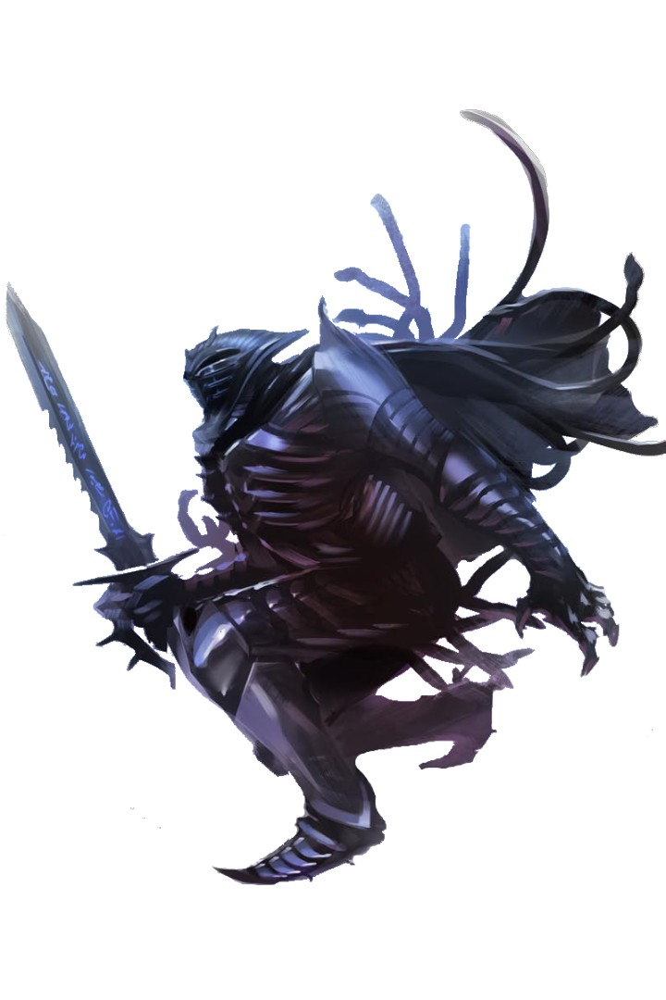
Position: Commander of Citadel Rivand and leader of the Order of the Rack Hellknights.
Description: This distant Lictor manages the clarity pyres and gatherings of his hellknights, though there are persistant rumors that he is searching for a successor among the ranks of the order.
Lord Mayor
Aberian Arvanxi
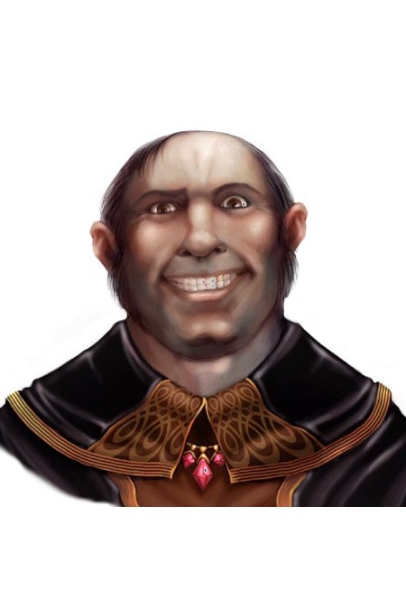
Position: Lord Mayor of Westcrown, responsible for the Dottari, tax coffers, and maintaining city stability.
Description: Effectively exiled to Westcrown from the Imperial Court, Lord Mayor Aberian is generally considered wasteful and obssessed with both the Opera and luxurious ammenities; on the other hand, he generally stays out of the affairs of the people, which suits them just fine and makes him one of the better mayors in recent memmory.
General
Vourne
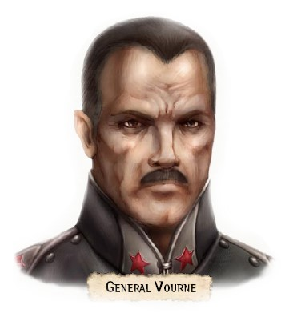
Position: Commander of the Gemcrown Bay Imperial Fleets and Landing Forces
Description: Representing Her Infernal Majestrix Abrogail II, General Vourne is a very serious Egorani that cares little for the customs of the Wiscrani or the frivolities of the Mayor. Responsible for defending the city from exterior attack, his forces frequently perform exersises practicing repelling Andoran warships and enforcing marshall law.
Duxotar
Iltus Mhartis

Position: High Warden and Commander of the all Dottari forces.
Description: The oft-drunken nephew of Lord Mayor Aberian. As Iltus "prefers to apportion his command to focus on the broader defenses of the city," his subordinates more often handle his abandoned responsibilities.
Ambassador
Vors Kyniar

Position: Ambassador of Taldor
Description: The official Taldan ambassador, Vors Kyniar of Oppara is a paladin of Iomedae and chooses to maintain residence in Westcrown rather than Egorian due his distaste for House Thrune. Residing in the opulent penthouse atop the Trivardum, Ambassador Kyniar is known to leverage his diplomatic immunity to support "local eccentricities."
Harbormaster
Casarus Vitallain

Position: Harbormaster of Westcrown
Description: As harbormaster, no ship may dock, load, unload, or depart Westcrown without his authorization, and he has both the power to influence what kind of cargo flow through Wiscrani ports as well as taking a cut of every mooring fee.
Paralictor
Gonville Chard

Position: A Hellknight Major in command of the famed Taranik House, Paralictor Gonville Chard directly commands the chapted of the Order of the Rack stationed at the Tanarik House within the Westcrown city walls.
Description: The official commander of Taranik House, Paralictor Chard has ben stuggling to keep control of his Hellknights within Westcrown while dealing with un-cooperative Dottari and logistics officers. Still, he musters the most Hellknights stationed within city limits, which is no small amount of power or prestige.
Durotas
Lhiana Strikis

Position: Warden of the Regidottari, or palace wardens, Durotas Lhiana Strikis is responsibile for the security and defense of the large mass of central islands of Parego Regicona.
Description: Renown for publicly berating her forces and treating them as little more than slaves, Durotas Lhiana Strikis maintains control of the Regidottari by offering higher pay and prestige, along with working the safer and more politically connected area of the Regicona. Lhiana herself has been a pawn and lover to at least three members of the city's nobility since her arrivan in Westcrown seven years ago, though she is unaware she is still considered a plaything rather than an asset by the gentry.
Durotas
Scasi Bolvona
Position: Warden of the Condottari, or canal wardens, Durotas Scasi Bolvona is responsible for the security and defense of the adels, barges, docks, marinas, canals, channels, and river along with all vessels on it, from the Dhaenflow to Gemcrown Bay.
Description: A passionate native of the city, Scasi has almost as many friends and political connections as the Duxotar, and his ambition drives him to ever-bolder moves among the nobles of the Regicona. His rise in influence has been curtailed in the past 14 years, though few know why.
Durotas
Saria Roccin
Position: Warden of the regular Dottari, Duxotar Saria Roccin is responsible for the security and defense of the city and its gates generally, and all the areas not covered by the other Durotas specifically.
Description: Commanding more troops than any other civic leader, Saria holds the Hellknights in contempt, only working with them as much as legally necessary while not giving them reason to find her guilty of any charges. Rumors have it that her problem with Hellknights comes from a personal and intimate encounter before she joined the Dottari.
Durotas
Arik Tuornos
Position: Warden of the Rundottari, or ruin wardens, Arik is responsible for the security, defense, and containment of Parego Dospera generally, and the prison sector of Rego Cader specifically.
Description: A fair but cynical man who supposedly only promoted to prevent a rival from reaching the rank of Durotas, Arik cares deeply for the lives of his friends and soldiers. He knows his command is a posting of low prestige and social punishment, but he and his men take pride in their responsibility of manning the walls of Rego Cader and the Oberian Gate to keep the threats and dangers of the ruins contained and out of the city.
Council Chairman
Unknown
Responsibilities: Conducting Council business, discussions, meetings, and votes.
Head of Discipline
Unknown
Responsibilities: Managing enforcement, maintaining discipline and order within the Council organization, and controlling the Council's puppet gangs.
Head of Eliminations
Unknown
Responsibilities: Managing assassinations and abductions, as required.
Head of Relations
Unknown
Responsibilities: Manages the task of disguising Council activities, brokering alliances, and aquiring puppet organizations along with Council recruits.
Head of Information
Unknown
Responsibilities: Manages the Council's blackmail, spy network, paid informant, and moles.
Head of Faith
Unknown
Responsibilities: Manages interactions with the various churches and priests in Westcrown.
Head of Repayments
Unknown
Responsibilities: Manages the Council's extortion, racketeering, and high-risk loan collections.
Head of Servants
Unknown
Responsibilities: Manages the Council's slave trade.
Head of Shipping
Unknown
Responsibilities: Manages the Council's shippin and port access.
Head of Armaments
Unknown
Responsibilities: Manages the Council's weapon, armor, and magical item smuggling.
Head of Accounts
Unknown
Responsibilities: Manages the council's liquid assets, security deposits, real estate, investments, and blackmail evidence.
Head of Vice
Unknown
Responsibilities: Manages the council's gambling, prostitution, and narcotics trade.
Patriarch
Vassindio Drovenge
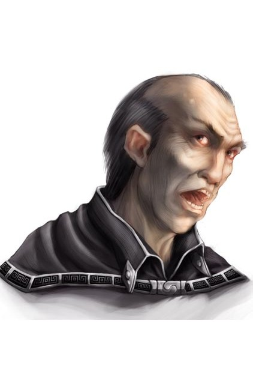
Description:
Patriarch
Eirtein Oberigo

Description:
Patriarch
Ursion Salisfer
Description: A melodramatic patrician with a dazzling smile, Ursion left his family for an ill-fated turn as an actor in Egorian, only to return to Westcrown when his star failed to rise and his funds ran dry. An avid fan of Theater Mortrescci, he is a well known supporter of the return of the dramatic "murderplays."
Patriarch
Asad Grulios
Description: The patriarch of the family, Asad Grulios is a harried, balding man. He manages his family's banking interests from the family estate, Vira Grulios, whose red-topped towers are a striking sigh on the skyline of western Triam island, which frugally employs mostly family rather than relying on slaves.
Lord Mayor
Aberian Arvanxi
Description: Mayor and host, Aberian is used to his word being taken as law.
Patriarch
Ocatav Julistarc
Description: Still in his twenties, this man appears to have lived as much as five men, though most of their lives seem bleak. An obvious cleric of asmodeus, a noble, and a scoundrel, his armored coat hides scars glimpsed as he moves, and an eyepatch hides his missing eye.
Matriarch
Scategi Dioso

Description: Sour-faced, sharp-eyed Scategi Dioso has been matriarch of House Diosi for many years, and it is a fairly open secret that she maintains her House's fortunes and influence with her deep criminal connections.
Patriarch
Kajen Tilernos
Description:
Patriarch
Marcus Phandros
Description: A well dressed and mysterius man, the Patriach of the Phandros family is young and a very skilled poet, though he supposedly lacks the skill of song.
Proffesor
Alphonse Khollarix
Description: An abscent minded teacher and proffesor, the future heir of the Khollarix House is ever invested in learning, and seems to only be here for the chance to talk to powerful wizards and not to mingle with the socialites.
Patriarch
Armon Rosala
Description: A jovial man, Lord Rosala laughs easily, smiles widely, and drinks with gusto. His eyes are clear and honest, though his clothes look as though he's seen better days.
Patriarch
Bartolo Mezinas
Description: Patriarch of the Mezinas family, this man is dressed as a monk, and spends most of his free time in meditation or disciplined training. Notably, he has not touched any food, and doesn't look like he intends to.
Varpnall
Plaguebearer Otyugh

Description: A particularly odious creture, Varpnall would be legendarily destructive if he wasn't both lazy and secretive.
Leader: Varpnall
Threat Level: Very High
Known Info: This beast seems to thrive in the sewer beneath Westcrown.
Devils of Westcrown
Various Devils
Description: Various devils with various jobs througout Westcrown
Leader: Eiseth, Sub boss: Isavenda
Threat Level: Moderate - High
Known Info: None
Shadow Beast
Unknown Shadows

Description: The stuff of dark nightmares.
Leader: Illnerik
Threat Level: Moderate - Very High
Known Info: These beasts operate in Westcrown by night and seem to be kept at bay with magical light.
Armiger's of the Rack
Hellknight Armiger's
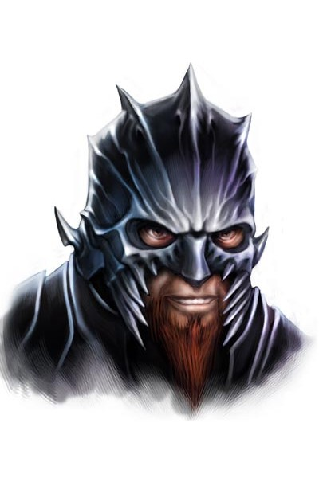
Description: The current crop of Armigers for the Order of the Rack.
Leader: Shanwen Shanwen
Threat Level: Moderate
Known Info: The current Hellknights in Training for the Order of the Rack have only had one real mission during their training - hunt down Arael and his supporters - only to endure embarassing failures. While not as fully equipped as a true Hellknight, their failure bodes poorly for their acceptance into the order, and for their trainer, Shanwen Shanwen.
Westcrown Wildlife
Thugs

Description: A gang of thugs on the radar of the Condottari.
Leader: The Kingfisher; Sub Bosses: Rakano "The Leopard" - Deceased, The Gray Fox, Alvarez the Flamingo
Threat Level: Moderate
Tracked down by Larko, this group of thugs run a smuggling and protections racket in Rego Pena. The Leopard and his gang are known to charge fisherman a small fee to inspect their goods for dangerous creatures, keeping what they like form their catch. Those who don't pay often find sea snakes addedd to their catches, which both eat the fish and endanger the fisherman. While operating illegally, their crimes are hard to prove.
Torble's
Sewer Ooze Bugs

Description: These Ooze bugs are the unofficial mascot of the Westcrown Sewers. Generally docile, these ooze bugs love eating rats, keeping the Westcrown sewers (and streets) relatively rodent and vermin free.
Leader: None
Threat Level: Very Low
Known Info: Torbles (called “chordoplasms” by scholars of strange fauna and “ooze bugs” by many others) are strange and fascinating creatures, curious in ways beyond what their simple forms might suggest. These strangely colored creatures resemble a cross between a tiny ooze and an insect. They typically have a bulbous, beetle-like translucent body, six legs, and long eyestalks with primitive sensory knobs on the end. Usually they take on green, gray, or pink shades, though they may be any color. Older torbles often tend toward the colors of large ooze predators such as ochre jellies, black puddings, or the colorless gelatinous cubes, though any relationship between them is unclear. The creature’s interior may be clear or cloudy, and has the same consistency and properties of the fluid that surrounds the brains of lower animals. After the creature feeds, however, its color temporarily changes to match the color of its meal—which sometimes remains visible for hours. Although a torble has no true organs, it has a stiff bundle of fibrous nerve tissue running the length of its body that helps hold its shape. When it rests, it retracts its antennae and legs into its body, similar to how a snail or slug withdraws its eyestalks when threatened. A typical ooze bug is about 7 inches long and 5 inches wide, and weighs about 1 pound.
Torbles fulfill the same roles as oozes and insect vermin: they hunt creatures close to their own size, scavenge corpses and organic material, and territorially attack anything they perceive as food or a threat. They gravitate to damp caves, city sewers, rotting logs, or corpses—anywhere they can find plentiful prey and not be disturbed by rival scavengers and predators. Because torbles are easily controlled by both ooze- and verminspecific spells, some isolationist clerics and druids use them to guard their secret lairs or process garbage when otyughs are unavailable or unsuitable.
Ooze bugs reproduce by creating internal buds that mature and migrate to the creature’s outer surface, erupting as inch-long, disgusting transparent things resembling a cross between a slug and a cockroach. These buds can survive the destruction of the parent for days, feeding off the corpse until they are ready to emerge and fend for themselves; this means attempts to eradicate an infestation are usually only temporarily effective, as the unborn torbles quickly grow and repopulate the area inhabited by the now-dead adults. Only if the bug-slayers deliberately crush the adult corpses or consume them with fire or similar methods can they be certain their efforts are successful in the long term.
Because torbles are sensitive to mental commands, telepathic creatures sometimes use them as guardians, distractions, or shock troops; even a lowly imp becomes a petty tyrant with a few torbles under its command. Torbles cannot resist such compulsions, unless they’ve already been telepathically commanded in the same round or have made a more significant bond with another.
Most torbles seem endlessly hungry and insistent on eating their discoveries before designating them edible or inedible. A torble can ingest nearly any fleshy, wooden, or bony matter, visibly dissolving such meals within their transparent bodies. Stone, metal, glass, and similarly hard objects prove resistant to their digestion, however, and pass through their system in a matter of 3 or 4 hours, floating suspended within their colorful ooze during that time. Once a torble has consumed something, it seems to retain memory of whether not such an object is edible—though many seem terribly forgetful in this regard.
Most torbles work in groups, coordinating their attacks like ants or bees, or forming large swarms that may number hundreds of individuals, though unlike colony insects they do not appear to have specialized roles such as queens and workers. Usually all members of a colony or swarm have an identical appearance—coloration, number of legs, and so on. They never attack others of their kind that match their specific physiognomy, though explorers have found caves with bulbous pink victors feasting on rent gray corpses, or six-legged varieties hunting down and killing four-legged intruders in their territory.
Torbles that get separated from such groups act wildly different, proving edgy and cowardly. Rarely attacking living creatures, a lone torble scavenges for whatever food it can find. Those who happen across individual torbles and offer them food find that ooze bugs instantly warm to them, likely following their benefactors for hours, even days on end. Those who continue such practices find torbles make dutiful pets, even if the skittish creatures often prove more comical than clever.
Tribune
Aric of Gemcrown Bay

Claim to Fame: Wealthy Trader and Tribune
Description: An ever-smiling man with short, wavy hair shot with gray, a tightness around his eyes as he continually scans the crowd. His clothes speak of the latest fashions, but seem to be slightly sized for larger man keeping an air of quick movement around him.
Visbaronetess
Delour Aulamaxa
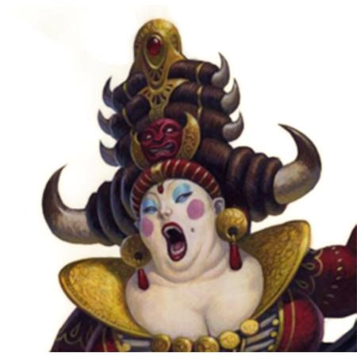
Claim to Fame: A tremendous woman, both in size and personality, Visbaronetess Delour Aulamaxa has long been one of Westcrown's most beloved divas. While she normally demands vast sums of money for her participation in a performance, she volunteered (or claimed) for the role of chorus for the prestige alone.
Description: The Visbaronetess' eyes show the passage of years that her alabaster skin and thick makeup traditionally conceal. Typically wearing extravagant clothing and jewelry, her costumes during a performance are often less bombastic and outlandish than her tremendous day-to-day wardrobe.
Dame
Delilee Ciucci
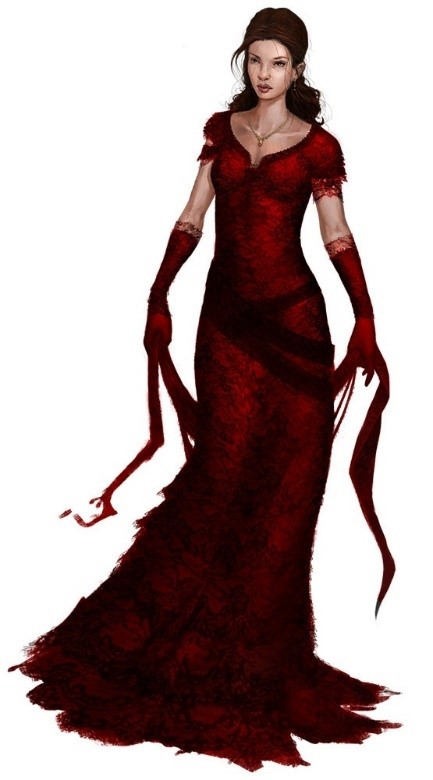
Claim to Fame: Single and Wealthy Noble
The only daughter of Patriarch Guxer Ciucci, she is well loved by the court for her easy smile, and naïve personality.
Second Sword Knight
Bellinia "Silvereye" Dorjana
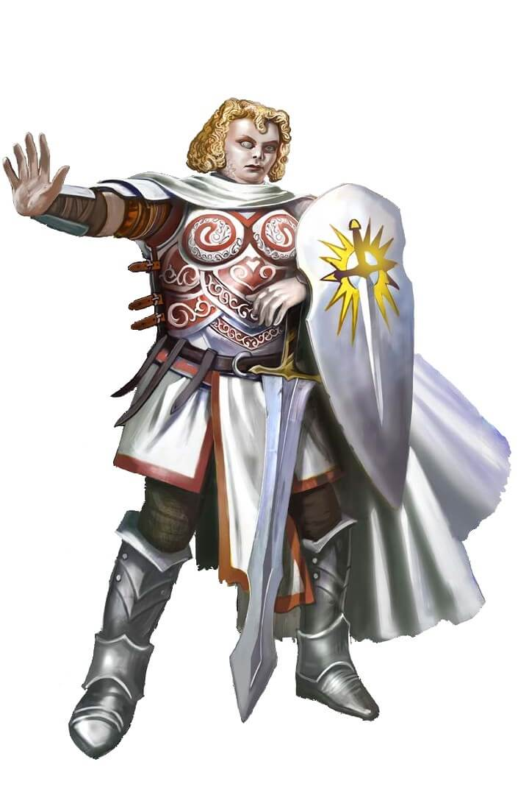
Claim to Fame: High Priestess of Iomedae
Description: The highest-ranking cleric of Iomedae in Cheliax, Bellinia was born with a magic silvery orb inscribed with Iomedae's holy symbol in place of her right eye. A stout, pale woman with a small nose and curly blond hair, "Silvereye" lives in her ancestral home, the Dorjanala in Rego Corna, and maintains the palace as an Aroden/Iomedae holy sight the sight where Iomedae's church formally "Inherited" the church of Aroden.
Lady
Chammandy Drovenge
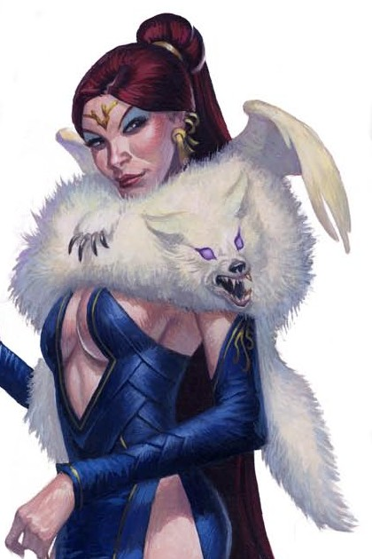
Claim to Fame: Single and Wealthy Noble
Description: The atractive daughter of Vassindio Drovenge and sole heir to the fortune of the wealthiest and most powerful family in Westcrown, Chammandy is nearly always surrounded by fans and suitors.
Lord
Eccobar Drumanis
Claim to Fame: sion of a Noble House
Description: Eccobar spends his time playing cards, dealing and shuffling and redealing his deck even if theres no one to share a game with him.
High Priest
Jarvaxus Garestic
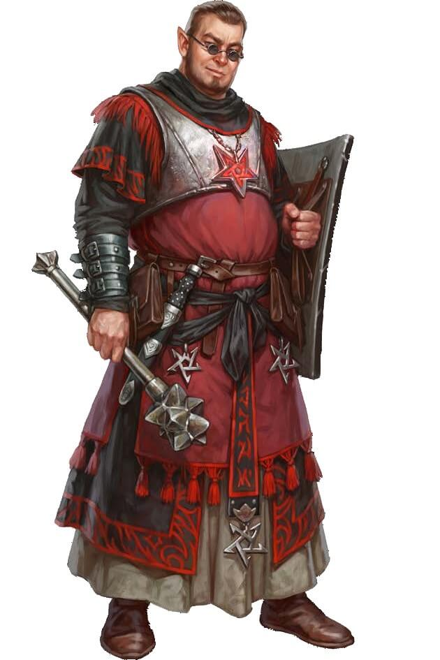
Claim to Fame: High Priest of Asmodeus
Description: High Priest Jarvaxus Garestic is a handsome, urbane half-elf, and proud to helm the Church of Asmodeus in Westcrown. Now at the pinnacle of his career, his lust for political power has waned but his affection for his city remains strong.
Master Hunter
Vuiper Ghivel
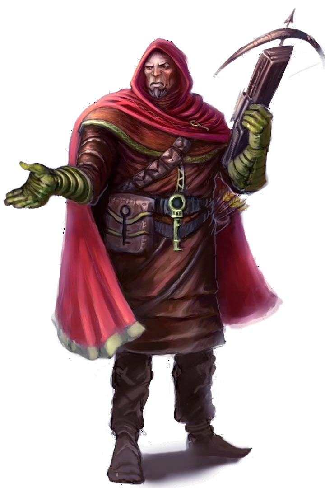
Claim to Fame: Famouse Bounty Hunter
Description: An obvious cleric of Abadar, while he is strong and well known among the nobility, he seems very out-of-place wherever he stands.
Miss
Ailyn Ghontasavos
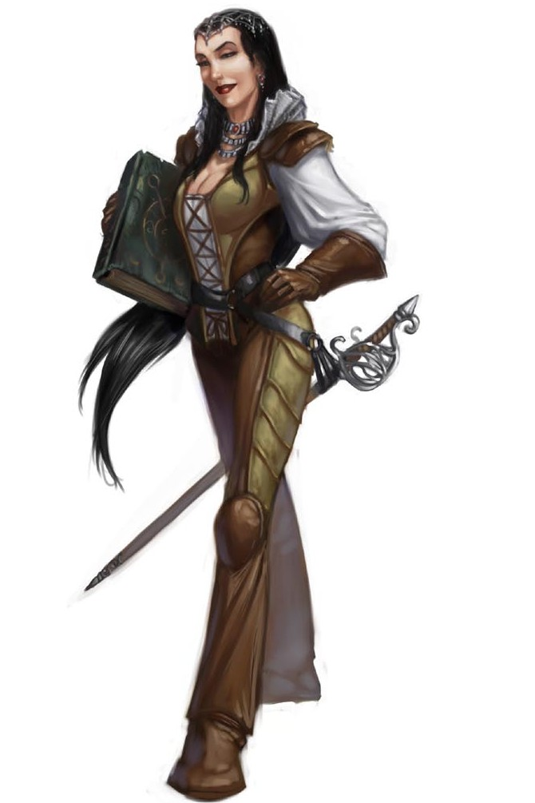
Claim to Fame: Renown Travelling Researcher
Description: A visiting researcher from Absalom, Ailyn Ghonstavos has a friendly but protective demeanor.
Dame
Loryan Imvius
Claim to Fame: Scion of Powerful Noble Family
Description: A dark-skinned horse-lord descendent, her family has long owed fealty to the Drovenges, anciently handling their herds, and now handling their money. A brisk financier and accountant, Loryan comes off as someone somewhere between a banker and a man richer than God.
Dowager
Lorialn
Claim to Fame: Wealthy and Powerful Dowager
Over a 110 years old, the Dowager moves with careful grace, taking small sips and bites. Moving here from Egorian after the death of her third husband, and having outlived all of her grandchildren, no one knows which of her 14 great-grandchildren will inherit.
Master of Ceremonies
Rance Lucca
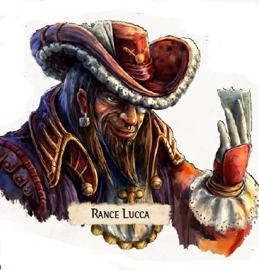
Claim to Fame: MC at the Devildrome
His family is relatively insignificant, having fallen from grace over a century ago, Rance Lucca runs a fighting arena called "The Devildrome," pitting summoners against eachother (along with the occasional desperate volunteer fighter).
Rigging Master
Millech "The Hump"

Claim to Fame: A talented special effects coordinator, set designer, and rigging master, millech is only in the limelight now because he is known to have worked with Robahl Nonon for years.
Description: A stocky hunchbacked man with stringy white hair, Millech was born deformed. Exceptionally tricky, stealthy, and a talented illusionist, Millech has worked as backstage support on nearly all of Robahl's plays, with the two developing the uncanny ability to anticipate the needs and wants of the other that only comes with a decades-long working relationship.
Infamous Director
Robahl Nonon

Claim to Fame: A talented and tyranical director, Robahl Nonon is the owner of the Limehouse Theater and a relatively infamous director known for his temper and his knack for getting performances out of his actors - at least those who don't run in shameful tears from the stage.
Description: A man so short and stout he could pass for a dwarf Robahl has a frighful frown. The toupee he wears is sadly obvious, as is the faded color of his once fine attire. A minor noble and former military captain, he sees himself as a professional shouter and delights in his fruitful and color use of language while never betraying paucity in his vocaularity with profanity. His face and neck turn increasingly crimson as his anger builds and becomes a tirade, and he has been known to run out of breath while abusing an actor.
Rising Starlet
Calseinica Nymmis

Claim to Fame: A natural talent and untrained actress, Calseinica served as the understudy to Visbaronetess Aulamaxa when she was injured in a carriage accident, forcing Calseinica to take to the stage in her stead at a production of the popular The Winter of White Roses. Her portrayal took Westcrown's critics by storm, and she retained the roll in all future performances by that director. Everyone now excitedly awaits her second roll on stage.
Description: A young aristocrat's daughter disowned for her scandalous lifestyle choice to move to Westcrown and act, she is still somewhat naive about the realities of her profession. A pretty young thing still overwhelmed with the fact she's somehow living her dream, her talent is pure and her exuberance infectious. She's smart enough to recognise Thesing for the trouble he is, and trusts her friend Aulamaxa and the director Robahl to protect her if necessary.
Majordommo
Crosael Simmin Rasdovain
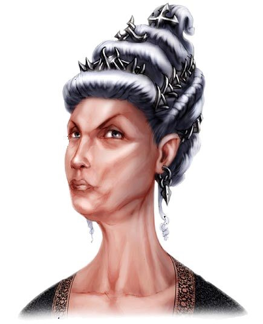
Claim to Fame: Mayor's Majordommo
Description: Relatively attractive, Crosael has served the Arvanxi family for many years, and as the current majordomo of the manor, she knows as much about this house as anyone alive, though its unlikely she'll ever share some of its secrets.
Tinkerer
Rolan
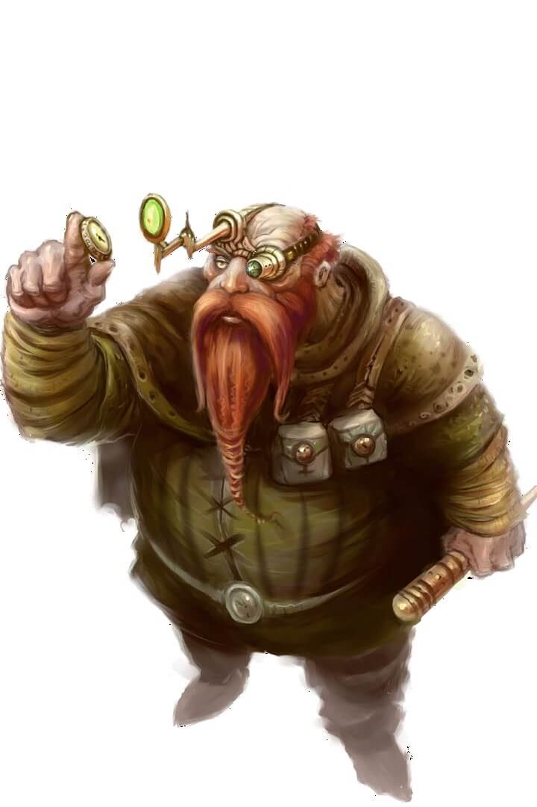
Claim to Fame: Owns and Operates a Construct-run Trinket Shop
Description: Rolan is a remarkably clean dwarf, but a glint of obsessive madness glitters in his eyes.
Sir
Eigolo Rustachas
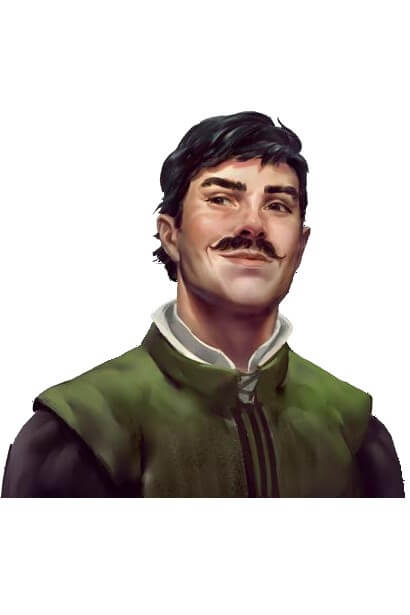
Claim to Fame: Minor Celebrity
Description: The eldest of 5 brothers and defacto head of House Rustachas, given their father's death three years ago, Eigolo has become a minor celebrity due to the heady combination of wealth, youth, and frequent public mistakes. Despite its illegality, he frequently goes on "Safari's" in Rego Cader.
Insuferable Actor
Thesing Umbero Ulvauld
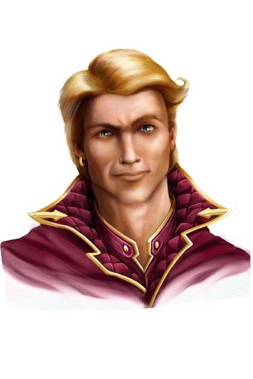
Claim to Fame: Renown Tenor and Actor
Description: A minor celebrity, Thesing is famous and he knows it, leveraging his fame to excuse his arrogance and lush behavior.